Studio System
HYPERFRAMES // READY
Next-Gen Video Architecture
Elevate Your Story With
Precision Motion Graphics
Built on local HyperFrames rendering, deterministic GSAP orchestration, and frosted glass design tokens.
PHASE 01
Cut & Sync
Paced Narrative
Trim pauses and review mistakes with word-level speech transcripts.
PHASE 02
Frosted Glass
Visual Storytelling
Direct camera flow through persistent worlds and modular glass cards.
PHASE 03
Deterministic
Zero-Flicker Render
Pixel-perfect H.264 export with sample-accurate audio mixing.